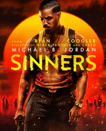

My top movies of all-time.
Your Name

About:
Two teenagers share a profound, magical connection upon discovering they are swapping bodies. Things manage to become even more complicated when the boy and girl decide to meet in person.
| Release date: |
Director: |
Story by: |
Producers: |
Running time: |
Distributed by: |
| 26 August 2016 (Japan) |
Makoto Shinkai |
Makoto Shinkai |
Kôichirô Itô, Genki Kawamura, Katsuhiro Takei, Noritaka Kawaguchi |
1h 50m |
Toho Co., Ltd. |
Kantara
About:
When greed paves the way for betrayal, scheming and murder, a young tribal reluctantly dons the traditions of his ancestors to seek justice.
| Release date: |
Director: |
Languages: |
Producers: |
Running time: |
Music director: |
| 30 September 2022 (India) |
Rishab Shetty |
Kannada, Tamil, Hindi, Telugu, Malayalam, Tulu language |
Vijay Kirgandur, Chaluve Gowda |
2h 28m |
B. Ajaneesh Loknath |
Train to Busan

About:
Seok-woo and his daughter are on a train to Busan on the latter's birthday to see his wife. However, the journey turns into a nightmare when they are trapped amidst a zombie outbreak in South Korea.
| Release date: |
Director: |
Sequel: |
Prequel: |
Running time: |
Languages: |
| July 2016 (South Korea) |
Yeon Sang-ho |
Peninsula |
Seoul Station |
1h 58m |
Korean, Thai, French |
Grave of the Fireflies

About:
Two siblings struggle to stay together and survive during the outbreak of World War II.
| Release date: |
Director: |
Story by: |
Screenplay: |
Running time: |
Adapted from: |
| 16 April 1988 (Japan) |
Isao Takahata |
Akiyuki Nosaka |
Isao Takahata |
1h 29m |
Grave of the Fireflies |
Sinners

About:
Trying to leave their troubled lives behind, twin brothers return to their Mississippi hometown to start again, only to discover that an even greater evil is waiting to welcome them back.
| Release date: |
Director: |
Producers: |
Running time: |
Genre: |
| 18 April 2025 (India) |
Ryan Coogler |
Ryan Coogler, Sev Ohanian, Zinzi Coogler |
2h 17m |
Horror |
I Want to Eat Your Pancreas

About:
An aloof boy comes across a book in a hospital waiting room. He soon discovers that it is a diary kept by his very popular classmate who reveals to him that she is secretly suffering from a fatal pancreatic illness.
| Release date: |
Director: |
Language: |
Running time: |
Genres: |
| 1 September 2018 (Japan) |
Shin'ichirô Ushijima |
Japanese |
1h 48m |
Animation, Romance, Melodrama, Drama, Teen |